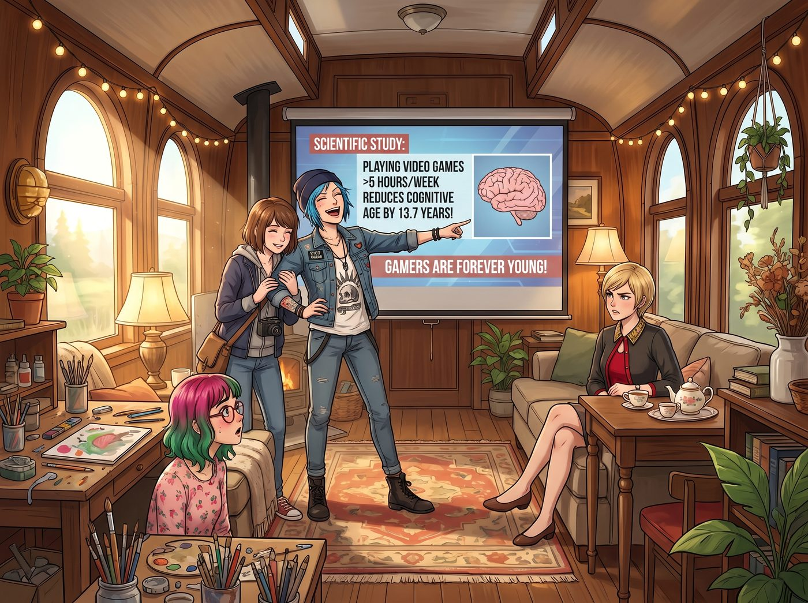

合法耍廢的科學依據

這張截圖簡直是上天賜給二號車廂廢人組的終極免死金牌。
當天下午，Chloe 直接把這篇新聞投影到了二號車廂那塊平時用來監控股市和聯邦網路的超大主螢幕上。
一、科學依據的宣告
「各位，請看大螢幕！」Chloe 雙手叉腰，囂張地指著上面的研究報告，「每週玩同一類電子遊戲五小時以上，認知年齡年輕十三點七歲！不想變傻瓜，就去打遊戲！」
她一把將 Max 拉到身邊，理直氣壯地對著工作台前的 Lily 和正在喝下午茶的 Victoria 宣告：「從今天開始，我和 Maxine 每天下午的遊戲時間不再是浪費生命，而是預防大腦老化的預防性醫療行為。這是科學！懂嗎？我們是在為團隊保護核心數位資產！」
Victoria 翻了一個足以翻到後腦勺的白眼。「Price，妳居然淪落到要拿一篇隨便什麼人的推文，來掩飾妳的懶惰？如果打遊戲能讓人年輕十三歲，那妳現在的智商應該已經退化成胚胎了。」
二、意外的合法化
然而，出乎意料的是，實習生 Lily 卻沒有像平時那樣拿出合規法條來威脅她們。她盯著螢幕上的醫學期刊摘要看了一會兒，推了推反光的圓框眼鏡。
「Victoria 學姐，從人力資本折舊管理的角度來看，這份研究的對照數據確實具有統計學意義。」Lily 軟糯的聲音響起，手指在平板上飛快地建立了一個新專案，「既然神經突觸的活躍度可以直接影響團隊的決策效能，我同意將妳們的遊戲時間列入車廂常規神經維護與抗衰老預算。每週最低工時要求：五小時。」
Chloe 和 Max 震驚地對視了一眼。她們原本只是想耍無賴，沒想到實習生居然真的用行政話術把打電動合法化成了KPI！
「但請注意，」Lily 露出了一個純潔的微笑，「研究強調是每週玩同一類遊戲。為了確保效果的穩定性，妳們必須固定遊戲項目，且我會定期抽查妳們的遊戲進度和認知數據哦。」
三、硬核遊戲之夜
既然獲得了官方批准，二號車廂的晚上徹底變成了網咖模式。但這群怪胎玩的遊戲，絕對不是什麼輕鬆休閒的派對遊戲。
Chloe 與 Max 選擇了需要極高策略和大量對話的CRPG神作來進行神經維護，但她們的遊玩風格完全是兩個極端。
「Chloe！妳為什麼又把那個賣藥水的NPC給殺了？！」Max 崩潰地看著螢幕上滿地的鮮血和敵對狀態的城鎮守衛。
「他賣得太貴了啊！這叫零元購，懂嗎？」Chloe 操控著她的盜賊角色在火海裡狂奔，「快點！Maxine！放個冰凍法術救我！」
「我拒絕！這已經是妳今晚第三次因為偷東西被全村追殺了，妳必須為自己的行為承擔因果報應！」Max 雖然嘴上這麼說，但還是無奈地給 Chloe 丟了一個治療術。
這兩人的遊戲日常就是：Chloe 負責到處惹事生非、偷竊、把場地變成火海；而 Max 則是那個絕望的存檔管理員，試圖在這個奇幻世界裡維持最後一點道德底線。
四、老錢名媛的地緣政治
原本對打遊戲嗤之以鼻的 Victoria，在看著她們玩了幾天後，也默默地打開了自己的高配筆記型電腦。但她堅決不玩那些打打殺殺的野蠻遊戲。
她玩的是一款以中世紀為背景的家族策略遊戲。對老錢名媛來說，這根本不是遊戲，這是家族信託與地緣政治模擬器。
「Victoria，妳在笑什麼？好可怕……」Max 偶然路過，看到 Victoria 正對著螢幕發出令人毛骨悚然的冷笑。
「我剛剛透過三場政治聯姻，兵不血刃地吞併了整個虛擬王國。」Victoria 優雅地抿了一口紅酒，「然後我以異端的罪名，把我那個企圖爭奪繼承權的虛擬表弟關進了地牢，並剝奪了他的所有頭銜。這種純粹的血統管理和資產兼併，比去看那些暴發戶的財報有趣多了。」
五、終極資源優化
如果說 Victoria 是在模擬封建統治，那實習生 Lily 玩的遊戲，就只能用駭人聽聞來形容了。
Lily 乖巧地坐在雙螢幕前，左邊是一款外星殖民地經營遊戲的畫面，右邊開著一個密密麻麻的試算表。
「Lily 妹妹，妳在玩什麼畫質這麼差的造房子遊戲？」Chloe 好奇地湊過來。
「這是一款關於外星殖民與資源最優化的管理模擬軟體，Price 學姐。」Lily 軟糯地回答。
Chloe 瞇著眼睛看了看螢幕，突然臉色慘白：「等等……妳螢幕上那個手術台上躺著的是什麼？妳右邊的表格裡為什麼寫著各種器官的價格？！」
「哦，這批襲擊我們基地的掠奪者，他們的勞動產出比太低了。」Lily 推了推圓框眼鏡，眼神純潔無暇，「所以為了維持基地的能量守恆與財務健康，我正在將他們轉化為高附加價值的資源，並出口給其他派系。這是最合規的資源回收方式呢。」
Chloe 嚥了一口口水，默默地退回了自己的沙發。她發誓，以後絕對不再隨便惹這個把經營遊戲當成資源優化模型來玩的恐怖實習生。
在這個瘋狂的遊戲之夜裡，每個人都在用自己獨特的方式維持著神經活躍度。